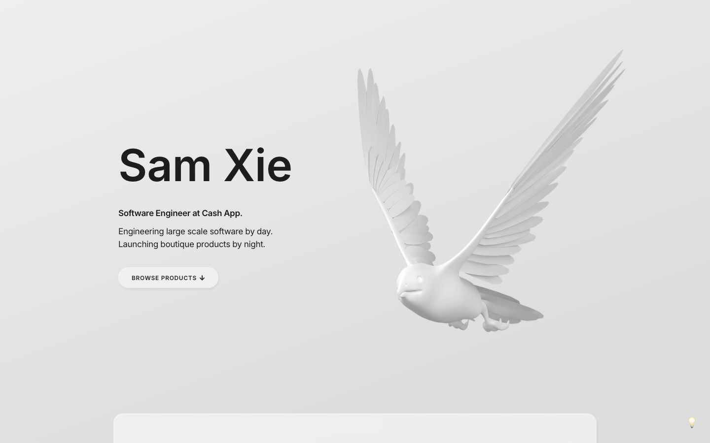

References / Website / 323
Sam Xie portfolio
A software engineer’s portfolio on a pale gray gradient with a soft raised button and a white 3D bird.
- Source
- samxie.net
- Creator
- Sam Xie
- Style
- Neumorphism (agent-proposed, not yet reviewed by a person)
- Moods
- Calm, minimal
- Evidence
- Captured with
tools/capture.mjs(headless Chrome, 1440 × 900) on 28 September 2026 and inspected. The screenshot shows the first viewport; the measurement covers up to four screens. - Reviewed
- Rights
- Third-party work, stored with credit for commentary. License: unverified. Rights policy
Context
The site’s template is published as samzx/soft-portfolio (created 1 May 2020), described as “a neumorphic inspired website”.
Observed
- A pale gray page with a faint diagonal gradient. “Sam Xie” is set in a very large, bold, near-black sans-serif.
- A “Browse products” pill in a lighter gray with a soft shadow is the only control.
- A large white 3D render of a bird in flight fills the right half.
- The top edge of a wide panel in a lighter gray with round corners rises from the bottom of the viewport.
Why it belongs
One of the few personal sites found that still use the style. The monochrome 3D bird matches the surface; the open-source template it derives from calls itself “a neumorphic inspired website”.
Measured: shadows on 71 % of boxes (median offset 4.5 px, median blur 4 px, none hard), borders on 0 %, median radius 20 px.
Measured
Machine-extracted by tools/extract-traits.js on . Full measurement.
- Type families
- Inter (100%), Arial (0%)
- Type scale ratio
- 1.95
- Median radius
- 20 px
- Mean chroma
- 0.01
- Palette
- #1d1d1f 72%
- #efefef 22%
- #dddddd 6%
- #000000 0%

